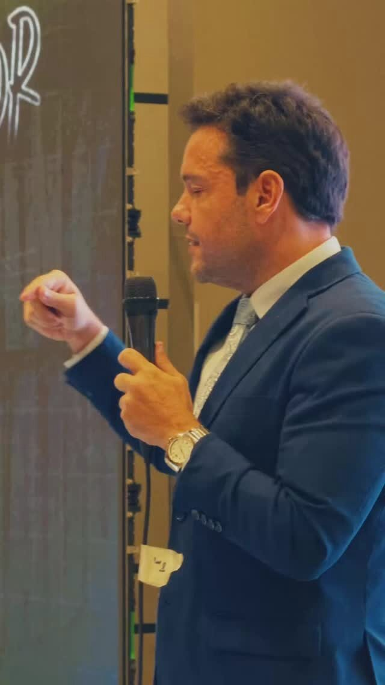

Palestra · Negativa de plano de saúde
O que a regra diz.
Prazo, forma e motivo: o que a operadora precisa cumprir quando nega um pedido.

Conversa de acompanhamento
O seu processo, em português claro.
O que já aconteceu, o que vem agora e o que depende de você, sem juridiquês.

Um número da norma
10dias úteis
é o prazo máximo para a operadora responder a um pedido de internação eletiva ou de procedimento de alta complexidade.
“Em análise” não conta como resposta.
FonteANS, Resolução Normativa 623/2024, art. 12, inciso II, alínea b, e § 5º, em vigor desde 1º de julho de 2025. Prazo contado da data do pedido. Norma conferida em 28/09/2026.
 05
05Toda carta de negativa é escrita com muito cuidado. Cuidado para não dizer o que realmente está dizendo.

08Obrigado.
Peça tudo por escrito.
Canais oficiais da Borelli Advocacia
Recebeu mensagem de outro número em nome do escritório? Não responda e confirme por um destes canais.
Caico Borelli Sociedade Individual de AdvocaciaRegistro OAB/CE [nº]Responsável: Caico Borelli · OAB/CE 24.895
Conteúdo informativo. Não constitui promessa de resultado, prazo ou valor. Cada caso é analisado individualmente.
100110